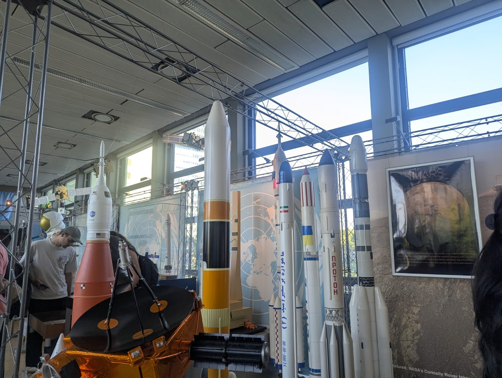

On May 26, 2025, as part of the Copernicus Hubs and Institution Course in the Copernicus Master in Digital Earth program at the University of Salzburg, our cohort spent a day visiting two very different but quietly connected institutions in Vienna: the Earth Observation Data Centre (EODC) and the United Nations Office for Outer Space Affairs (UNOOSA). One showed me the machinery that makes Earth observation possible; the other showed me why that machinery matters far beyond any one country's borders.
Earth Observation Data Centre (EODC)
EODC was our first stop, and the day opened with a session from Jan Zabloudil on Austrian Scientific Computing Infrastructure (ASC). ASC is a cooperation of several Austrian universities that provides computing resources and technical support to the Austrian research community. He walked us through how ASC, formerly known as the Vienna Scientific Cluster (VSC), has evolved over the years in response to growing computing needs. Its current flagship systems, VSC-4, VSC-5, and MUSICA, are the fastest supercomputers in Austria.
MUSICA, the newest addition, runs across 440 compute nodes (272 GPU and 168 CPU) spread over three sites, with the larger share based in Vienna and the rest split between Linz and Innsbruck. It's built with a strong mix of GPU and CPU nodes alongside high-speed, all-flash storage — exactly what makes it well suited to AI computing demands, since the compute and the storage are both designed to keep pace with that kind of workload. Because the system is deliberately distributed across Vienna, Linz, and Innsbruck rather than centered in the capital, the renaming makes sense too: ASC was chosen over VSC specifically to reflect that it's no longer just a Vienna cluster but a national, distributed one.
After the lecture, Jan showed us around the server rooms of VSC-4 and VSC-5. It was my first time walking into a data centre room, so it was a rather thrilling experience. The racks were organized in long rows, and there were many of them. What stood out to me was how the design of these systems can impact the energy lost to the surrounding air. While we walked across the aisle of one system, it was venting noticeably hot air, while a system that looked similar from the outside was releasing significantly less heat into the room. It was a reminder of how a design choice — something as specific as the cooling architecture — can make a real difference in protecting against energy leakage. In one of the rooms, Jan showed us how they've moved to liquid cooling to manage heat instead of relying purely on air conditioning; MUSICA, in particular, cools its compute nodes directly with liquid, while heat from supporting components like power supplies and network switches is handled separately through heat exchangers built into the racks. It was a sustainable choice which I really admired.
 Vienna Scientific Cluster 5 (VSC-5) room
Vienna Scientific Cluster 5 (VSC-5) room
Soon after, Christian from EODC gave us an overview of the organization itself. He spoke about EODC's mission, available facilities, and the services it offers. EODC was established as a public-private partnership, with the aim of fostering collaboration between the public and private sectors as well as international partners, particularly through the establishment and operation of shared IT infrastructure. EODC serves as a bridge between scientific research and practical applications, promoting the use of Earth Observation (EO) data across various domains. It is also involved in several Copernicus initiatives, including the Copernicus Global Land Service (C-GLOPS), the Copernicus Climate Change Service (C3S), and the Global Flood Monitoring Service (GFM), among others.
United Nations Office for Outer Space Affairs (UNOOSA)
UNOOSA was our second and final stop of the day, located inside the UN office in Vienna. UNOOSA works to promote international cooperation in the peaceful use and exploration of space, and in the utilization of space science and technology for sustainable economic and social development. Under its Space Applications Section, several flagship programmes and global initiatives stood out: UN-SPIDER, Space4Water, Space4SDGs, Access to Space for All, Space4Women, and Space4Youth.
We had the opportunity to learn about several projects the organization supports, of which rapid land subsidence analysis was particularly interesting to me. It was also fascinating to learn how UNOOSA supports the launch of nano-satellites for developing nations for EO applications, a reminder that space infrastructure doesn't have to mean billion-dollar missions to be transformative.
Beyond the presentation, the interaction session was genuinely engaging. There were thoughtful discussions around UNOOSA's future work, its priority areas, its synergy with other UN bodies, and its cooperation with member countries and other international organizations. We also talked about sustainability concerns and the environmental impact of the massive increase in satellite launches in recent years. The need for open datasets, optimal utilization of existing datasets, and broader accessibility of data was highlighted repeatedly throughout the discussion.
What stayed with me from the visit is this: even though individual resources can be limited, cooperation with organizations like UNOOSA brings space closer to everyone than we might think, something especially valuable for countries and institutions that can't build large-scale space infrastructure on their own.

Space Exhibition, UNOOSA, ViennaWe also visited the public space exhibition at the UN office. On display were moon rocks, models of the International Space Station, rockets, satellites, and more. It was a genuinely beautiful thing to see in person, a tangible reminder of how much has been built, and how much of it stands on shared effort.
Looking back, the day had a quiet symmetry to it. EODC showed the infrastructure layer: the racks, the liquid cooling, the distributed supercomputing that makes processing petabytes of Sentinel data possible at all. UNOOSA showed the cooperation layer: the policy frameworks, partnerships, and shared access that decide who actually gets to use that infrastructure once it exists. Neither one means much without the other — raw computing power without open access just concentrates capability, and open-access ambitions without the underlying infrastructure stay aspirational. For someone from Nepal, thinking about how EO data and space technology can serve places with far fewer resources, seeing both halves of that equation in a single day was the most valuable part of the visit.